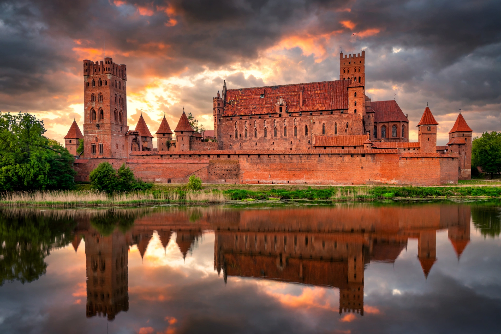

The Castle of the Teutonic Order in Malbork (Polish: Zamek w Malborku; German: Ordensburg Marienburg) is a 13th-century castle and fortress located in Malbork, Poland. It is the largest castle in the world measured by land area and a UNESCO World Heritage Site.

| Location | Malbork, Poland |
|---|---|
| Built | 13th century |
| Built by | Teutonic Order |
| UNESCO | World Heritage Site (1997) |
Construction began in 1274 by the German Teutonic Knights, who named it Marienburg in honour of Mary, mother of Jesus. In 1309 it became the headquarters of the Grand Master of the Teutonic Order, and the castle was greatly expanded into a triple fortified complex: High, Middle, and Low Castle.
After the Thirteen Years' War, the castle passed to Poland in 1466 and served as a Polish royal residence. It was damaged during the Napoleonic Wars and heavily in the Second World War, then meticulously restored.
Built largely of red brick in Gothic style, the complex covers about 52 acres (21 hectares) within its outer walls. It includes the Grand Master's Palace, St Mary's Church, chapter house, refectories, and extensive defences on the River Nogat.